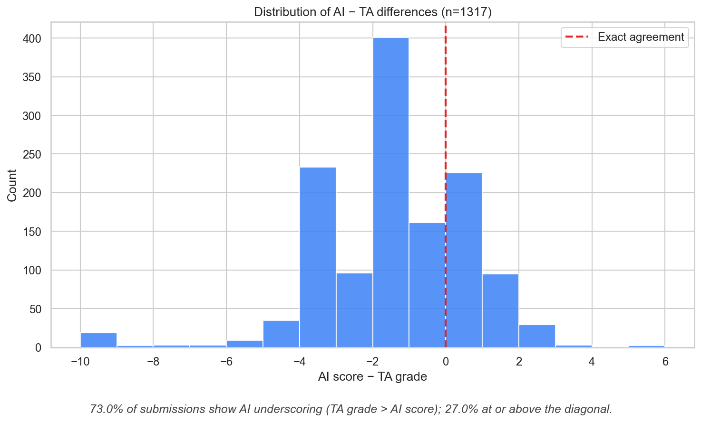

An AI grader assigns scores to student algorithm submissions.
A TA reviews every AI score and adjusts where the AI was wrong.
Question: can a model learn to predict which submissions need adjustment — and reduce the TA’s review burden?
An study on algorithm course dataset
ITCS 6114 · Fall 2025 dataset
An AI grader assigns scores to student algorithm submissions.
A TA reviews every AI score and adjusts where the AI was wrong.
Question: can a model learn to predict which submissions need adjustment — and reduce the TA’s review burden?
| Property | Value |
|---|---|
| Source | qry6114_2025f_autograding_final.xlsx |
| Total submissions | 1,520 |
| After filtering | 1,317 |
| Students | 79 |
| Questions | 10 (after excluding Q9) |
| Time range | Aug 2025 – Nov 2025 |
Question 9 excluded due to incompatible scoring scale (0–20 vs 0–10).
TA grades are usually higher than AI grades — by ~2 points on average.

Distribution is sharply skewed left of zero. Peak at −2 to −3 points.
For each submission, predict one of 5 actions:
Goal — match the TA’s actual adjustment.
Each submission becomes a 16-dimensional vector:
Reward depends on how close the predicted adjustment is to the actual TA adjustment, with a separate bonus for correctly flagging large adjustments.
| Method | Type | Description |
|---|---|---|
| PPO | RL | Proximal Policy Optimization, 50k timesteps |
| A2C | RL | Advantage Actor-Critic, 50k timesteps |
| Random Forest | ML | 200-tree classifier on same 16 features |
| OLS Regression | ML | Linear regression, ai_score only |
| Always +2 | Heuristic | Fixed action |
| Always trust AI | Heuristic | Fixed action |
PPO leads marginally on the single split.
| Fold | PPO | Random Forest |
|---|---|---|
| 1 | 8.52 | 8.67 |
| 2 | 8.73 | 9.01 |
| 3 | 8.47 | 8.49 |
| 4 | 8.14 | 8.36 |
| 5 | 8.10 | 8.55 |
Random Forest outperforms PPO consistently across all 5 folds.